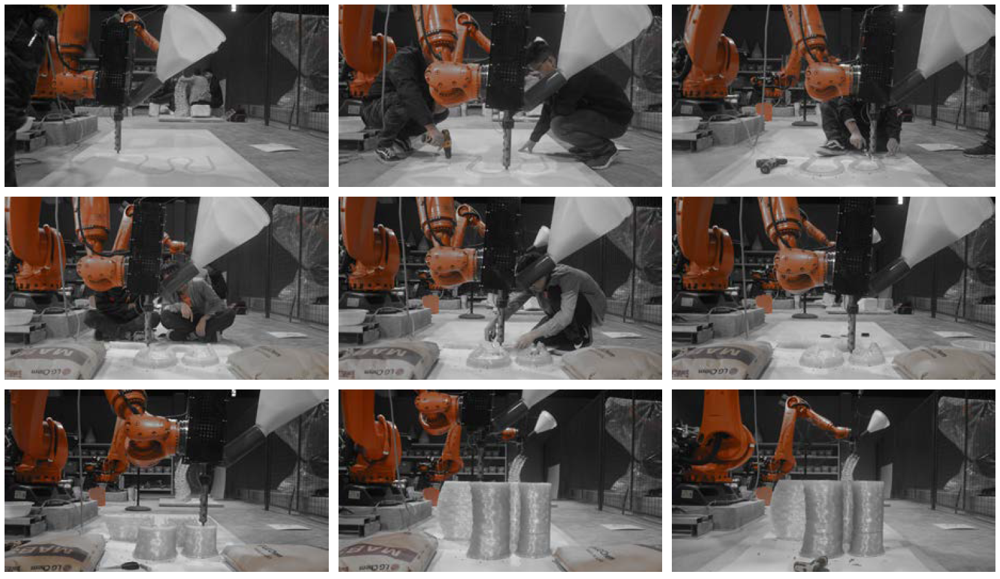

3D Printing Chair: MIX
2019 / Digital Fabrication
Individual work
Introduction
Mix is a high performance chair which attempts to make full use of two robotics addictive manufacture methods -- Fused Deposition Modeling(FDM) and spatial 3D printing (Another kind of fused modeling method that can achieve partly selfsupporting). Both of them use PLA objects, a widely used degradable plastic, as material and the same printing effector whose operating temperature reaches 500 degrees Celsius. By designing a mix printing path , a specific fabrication strategy has been added into this process.

fig1. Chair
Starting with the research on the structure of elytra , an organ of insect to fly, this project tries to explore the structural potential of 3D printing and the materiality of PLA. The challenge of making this chair is that these two printing methods share robot and material while their fabrication demands varies widely. Therefore, it is the core of this project how to a design printable, ergonomic and energy saving printing path.

fig2. Printing Path Design
fig3. Printing Process